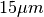
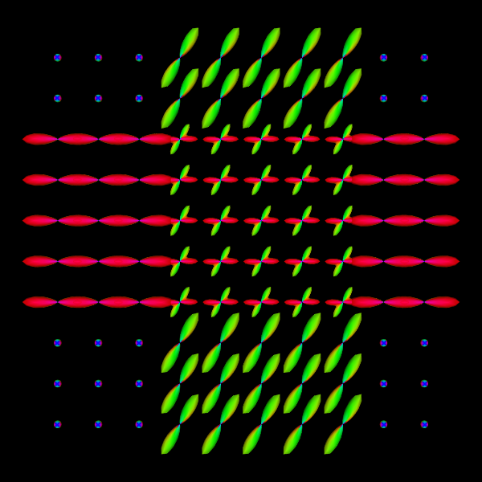
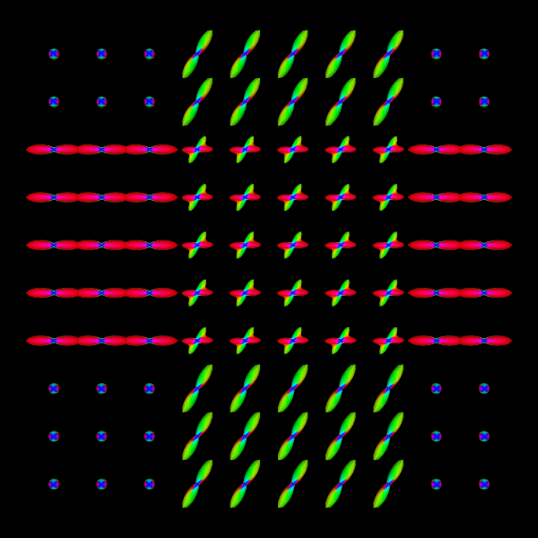

DWI data simulation¶
Generate DWI data from a configuration file¶
We provides DWISimulator routine to generate DWI data from a customizable configuration file.
See example codes in Example/test.sh and example configuration files in Example folder.
See userguide.
Generate data with 3 shells.
export DMRITOOL_EXAMPLE_DIR=${DMRITOOL_SOURCE_DIR}/Examples
b=1000,2000,3000
DWISimulator ${DMRITOOL_EXAMPLE_DIR}/dwi_crossing.txt --outdwi dwi.nii.gz --outodf odfTrue.nii.gz --outeap eapTrue_r0.015.nii.gz --qorientations ${DMRITOOL_EXAMPLE_DIR}/Elec060.txt --bvalues ${b} --rorientations ${DMRITOOL_EXAMPLE_DIR}/directions_t4.txt --rvalues 0.015 --noisesigma 0.0 --outb0 dwi_diagonal_b0.nii.gz --outputdwitype EACHSHELL
- It uses the same gradient file
${DMRITOOL_EXAMPLE_DIR}/Elec060.txtfor these three shells. - If you want to use different gradient files in different shell, try to use
--bfileto specifically set b values for each gradient direction. - The routine will output a
dwi.txtfile (same name asdwi.nii.gz). The file contains three shells separately in three lines, because we set--outputdwitype EACHSHELL.--outputdwitype 4DALLwill generate one dwi data file, one gradient file and one b value file for all 180 DWI volumes.
The ground truth of EAP profile field with radius  is in eapTrue_r0.015.nii.gz, and
the ground truth ODF file is odfTrue.nii.gz.
The you can visualize the ground truth of EAP profiles and ODFs via vtkviewer, VTKPolyData.py or via Paraview.
MeshFromSphericalFunctionTessellatedSamples eapTrue_r0.015.nii.gz -o eapTrue_r0.015_vis.vtk ${DMRITOOL_EXAMPLE_DIR}/directions_t4.txt --scale 8e-6
VTKPolyData.py --vtk eapTrue_r0.015_vis.vtk --png eapTrue_r0.015.png --zoom 1.3

eapTrue_r0.015
MeshFromSphericalFunctionTessellatedSamples odfTrue.nii.gz -o odfTrue_vis.vtk ${DMRITOOL_EXAMPLE_DIR}/directions_t4.txt --scale 1.5
VTKPolyData.py --vtk odfTrue_vis.vtk --png odfTrue.png --zoom 1.3

odfTrue
To obtain the ground truth of MSD map, RTO map, you can use:
b=1000,2000,3000
DWISimulator ${DMRITOOL_EXAMPLE_DIR}/dwi_crossing.txt --outdwi dwi.nii.gz --outodf odfTrue.nii.gz --outeap eapTrue_r0.015.nii.gz --outrto rtoTrue.nii.gz --outmsd msdTrue.nii.gz --qorientations ${DMRITOOL_EXAMPLE_DIR}/Elec060.txt --bvalues ${b} --rorientations ${DMRITOOL_EXAMPLE_DIR}/directions_t4.txt --rvalues 0.015 --noisesigma 0.0 --outb0 dwi_diagonal_b0.nii.gz --outputdwitype EACHSHELL
You can also add noise to the noise-free dwi data.
DWINoiseGenerator dwi_b1000.nii.gz dwi_b1000_noise.nii.gz --snr 25
--snr 25 means variance of the noise is S(0)/25, if b0 image is not set by --b0, then S(0)=1 is the default value.

{kind=link}
{kind=link}